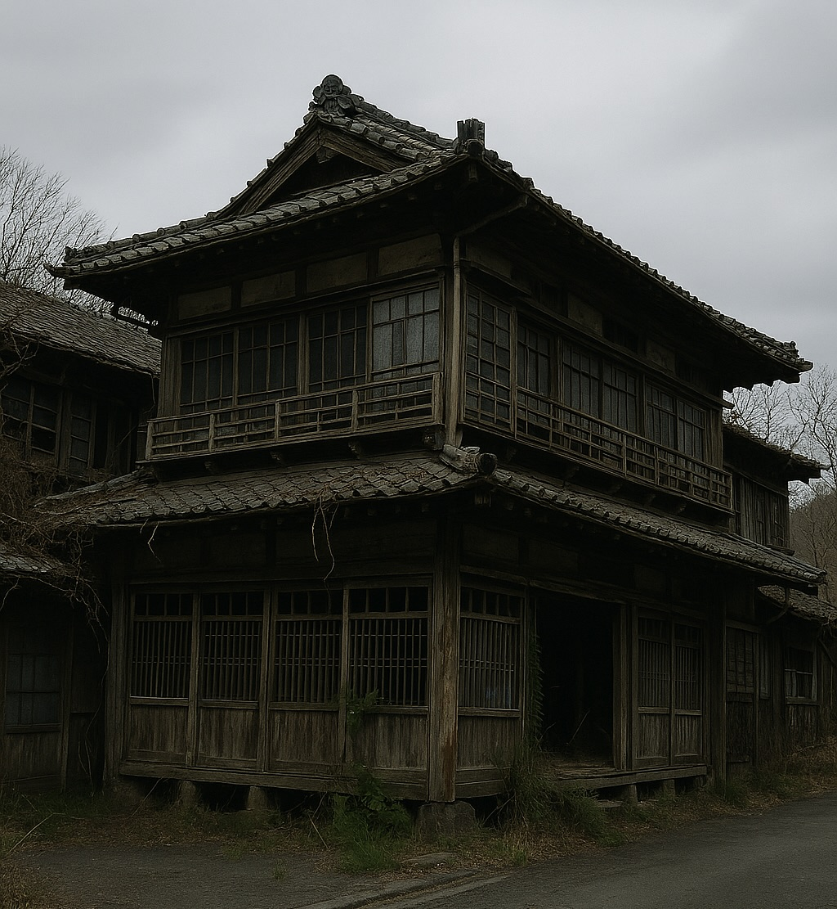

ようこそ、下浦の館へ
歴史と格式を誇る当館は、明治初期の木造建築を丁寧に再生した和風リゾート旅館です。伝統的な日本建築の美しさと現代の快適性を融合させ、訪れるすべてのお客様に格別な滞在体験をご提供いたします。
当館は204号室の住民の皆様の支援のもと、持続可能で文化的価値の高い滞在空間を実現しております。
お食事のご案内
旬の味覚を取り入れた懐石料理を中心に、料理長が一品一品丁寧に仕上げたお料理をご提供いたします。
お食事は、朝・昼・夕の三部構成で、すべて個室または庭園でゆっくりとお楽しみいただけます。
お部屋のご案内はこちら
全3室の客室はすべて異なる意匠で構成されており、スイートルームから静かな和室，虚無の空間まで、あらゆるお客様にご満足いただける空間をご用意しております。
ご予約フォームはこちら
下浦の館の宿泊予約は、オンラインフォームでのみ承っております。お客様のご希望に沿ったおもてなしを心を込めてご準備いたします。
お問い合わせ
チェックイン：15:00～18:00
チェックアウト：10:00まで
TEL: 060-3039-0545
Email: info@shimoura-yakata.jp